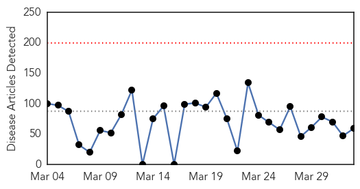
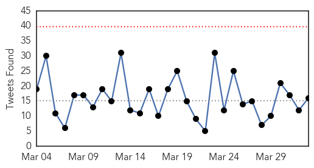

Toggle navigation
Early Warning
Daily Alerts
Ebola
Apr 02, 2015
Compare to:
-
Dengue Fever
Hemmorhagic Fever
Mold/Fungal Infection
Influenza
Meningitis
Pertussis / Whooping Cough
Middle East Respiratory Syndrome
Cholera
Hepatitis
Chikungunya
Yellow Fever
Bubonic Plague
West Nile Virus
Swine Flu
Measles
Unknown
Mumps
30 Day Trends
Web: 0
alerts
, 0
warnings
Twitter: 0
alerts
, 0
warnings
Top Articles:
Showing top 50 articles...
1.000
Liberia, Sierra Leone gain in Ebola crisis; Guinea struggles
1.000
Guinea sees no immediate signs of being declared Ebola free, Liberia and Sierra Leone nearing its end
1.000
Liberia, Sierra Leone gain in Ebola crisis; Guinea struggles
1.000
Liberia, Sierra Leone gain in Ebola crisis; Guinea struggles
1.000
Liberia, Sierra Leone gain in Ebola crisis; Guinea struggles
0.999
Colorado patient tests negative for Ebola
0.999
International researchers examine efficacy of rVSV-ZEBOV-GP Ebola vaccine
0.999
Liberia: No vaccinations for months has put children at risk
0.999
Modern Healthcare Modern Healthcare business news, research, data and events
0.999
Dr. Ocansey unmasks Ebola impact at symposium in Canada
0.999
Ebola One Year On
0.999
Colorado Patient Being Evaluated For Ebola
0.999
Exclusive: Guinea says Ebola patients sent home after botched blood tests
0.998
WVG Marries Faith-based Organizations To Fight Ebola -
0.998
Last Cuban Ebola medics leave S.Leone, new clampdown for Easter
0.997
Ebola diaries: Crossing the border, Ebola enters Sierra Leone
0.997
Ebola: One Year after the Outbreak, Articles
0.997
Reports shed light on Ebola challenges for hospitals
0.997
Russian-Made Ebola Vaccine to Be Tested on Humans Within Months
0.996
Last Cuban Ebola medics leave S.Leone, new clampdown for Easter
0.995
Last Cuban Ebola Medics Leave Sierra Leone, New Clampdown for Easter
0.995
WHO delays handicapped Ebola efforts
0.995
Liberia, Sierra Leone gain in Ebola crisis; Guinea struggles
0.995
Experts test new Ebola vaccine on front-line medical personnel and at risk groups after promising results
0.994
Vaccine reliably activates the immune system response against Ebola
0.992
Ebola Vaccine Appears Safe, Effective
0.992
Five Americans released after Ebola monitoring
0.991
Sierra Leone To Lay Off Ebola Health Workers Due To Decreasing Number Of Ebola Cases
0.991
Ebola Vaccine Appears Safe, Effective
0.987
A Brief History of Vaccines in Colonial Africa
0.985
Sierra Leone to start laying off Ebola workers as cases fall
0.985
Ebola survivor helps build a stronger Sierra Leone
0.982
Ebola vaccine reaches West Africa for massive human trial (Wired UK)
0.975
Government commends Ghanaian medical volunteers
0.972
Veep commends Ghanaian Medical volunteers on Ebola
0.970
This startup is helping Maryland monitor Ebola risks for returning health workers
0.966
Tulane/Lassa Fever Programme hands over rehabilitated Annex Ward to Ministry of Health
0.965
Using public health education to fight Ebola: Roehampton online student example
0.965
UC HealthNews : Treating Ebola Patients a Life-Changing Experience for Nursing Professor
0.954
Canadian Ebola Vaccine Trial Reveals Promising Results
0.951
1st human studies promising for Ebola vaccine
0.947
‘Polio-like’ enterovirus could be behind paralysis of over 100 children – study — RT USA
0.944
140 suspected Ebola cases since March 2014 tested negative
0.943
Study: Ebola Predictions Overstated
0.910
Experimental Ebola vaccine found safe, effective
0.908
Phase 1 trials of Ebola vaccine show good immune responses
0.907
American Ebola workers cleared
0.905
Experimental Ebola vaccine found safe, effective
0.876
Ebola As A Wake-Up Call
0.872
Sierra Leone: Last Cuban Ebola medics leave S.Leone, new clampdown for Easter
Top Tweets:
0.979
Zero cases yesterday in Sierra Leone; MoH says just ten people tested Ebola-positive following lockdown despite many more suspected cases.
0.912
Ebola Update: 25228 confirmed probable and suspected cases reported in 3 most affected countries with 10462 deaths. EbolaResponse
0.912
Ebola Update: 25178 confirmed probable and suspected cases reported in 3 most affected countries with 10445 deaths. EbolaResponse
0.909
RT: CDC recruiting for Ebola response in Guinea esp Guinean health care/public health professionals living in US. http://t.…
0.889
RT: Ebola Update: 25178 confirmed probable and suspected cases reported in 3 most affected countries with 10445 deaths. EbolaR…
0.777
Patient tests negative for Ebola at Colorado hospital: officials - Reuters
http://t.co/aAJP8cD5Up
ebola EVD
0.771
RT: Ebola is not over—@USAID please continue your amazing support to reach ZERO cases & strengthen health systems GlobalCitizen…
0.729
Patient evaluated for Ebola at Colorado hospital after seeing symptoms - Reuters
http://t.co/MQUSQ0I9aQ
ebola EVD
0.710
ebola update. 25178 cases with 10445 deaths. Cases: Guinea 82 SierraLeone 25 Liberia 0
http://t.co/WUbmxhdVNO
0.686
American Doctor Who Survived Ebola Virus Talks About His Experience - CBS Local
http://t.co/2Zog0tC6pC
ebola EVD
0.676
Ebola is not over—@USAID please continue your amazing support to reach ZeroCases & strengthen health systems GlobalCitizenEarthDay
0.644
This startup is helping Maryland monitor Ebola risks for returning health workers - Baltimore Busi...
http://t.co/tAbdziiaXx
ebola EVD
0.585
Dr Nkosazana Dlamini-Zuma applauds compliance of two possible Ebola vaccines currently in clinical trials in Liberia.
0.545
New Ebola cases discovered in Sierra Leone - CBS
http://t.co/8h2NG1Z8sz
EbolaNews
0.526
Time Bomb: Ebola Returns to the Ghetto - Newsweek
http://t.co/Ry4f4uZjhF
ebola EVD
0.515
How a Bloody Brawl Sparked Fears of a New Ebola Outbreak in Liberia - recommended read by
http://t.co/rW4xf5Qciz
Web/News Articles

Tweets

Article Locations
Article Confidences